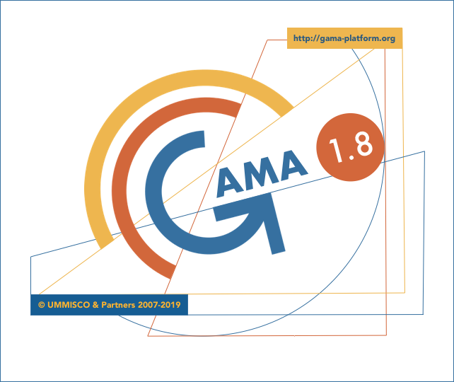

Versions of GAMA
GAMA exists since 2007 and has undergone a number of changes since its first release, materialized by different versions of the platform. Although we do not maintain these versions anymore, some are still used in lectures or specific projects. This page provides a list of these versions and, for each of them, a summary of its features and a link to its documentation in PDF format.
GAMA 1.8 (May 2019)
Version 1.8 is the current version of GAMA. It improves many features over version 1.7 :

GAMA 1.7 RC 2 (April 2017)
This version introduced many features over 1.6.1 :
GAMA 1.6.1 (June 2014)
GAMA 1.6.1 improves many features over version 1.6 :
- OpenGL displays improvements
- Various enhancements for displays (overlay, focus, light, trace, DEM, colors with alpha, addition of CSS colors..)
- Compilation of models (errors tracked, memory, report of errors, etc.)
- Validation of stochastic models (random now extended to every areas of a model, incl. the operations on HashSets)
- GIS file handling (esp. with the possibility to pass a custom CRS)
- Handling of OSM data
- Comparison of raster and vectorial maps
- Traffic moving skill improvement
- Handling of various other file types (uniform constructors, ...)
- Documentation itself (both online and on the website)
- Testing framework and debugging tools (trace, sample)
- Speed of computation of several spatial operators
- Experiments (permanent output, access to the duration of cycles)
- Type system (complete parametric definitions of types)
- Addition of several 3D operations
- Auto-update mechanism of plugins
- Automatic importation of files/projects when double-clicked in the OS (or transmitted by command line arguments)
- Definition of charts (dynamic data lists, marker type, range, etc.)
Documentation:
- Available online
GAMA 1.6 (July 2013)
This version introduced many features over 1.5.1 :
- correction of bugs (in particular, freeze, memory consumption)
- performance improvement (in particular for "big" models)
- further simplification of the GAML language (assignments, manipulation of containers)
- integration of an agent browser
- improvement of the 3D integration (new operators, new display facet bug corrections...)
- removing of the environment block
- more user/simulation interaction (event statement)
Documentation:
GAMA 1.5 / 1.5.1 (July & November 2012)
Key points :
- Improvement of the performance and stability
- Simplification of the modeling language (omissible facets, types as declarations, etc.)
- Integration of non-spatial graphs
- Introduction of OpenGL displays
- Improvement of the user interaction in the simulation perspective
- Generalization of the notion of experiment
Version 1.5.1 improved some features of 1.5 :
- correction of bugs (in particular, no more freezes when reloading an experiment)
- performance improvement (in particular for "big" models)
- improvement of the 3D integration (new operators to add a "z" to geometries, bug corrections...)
- new models (driving_traffic, Vote, 3D models)
Documentation:
GAMA 1.4 (December 2011)
This versions introduced the new integrated development environment based on XText, as well as a completely revamped modeling language, not based on XML anymore, and much easier to read and write. It also introduced new important types such as geometry, graph, path and topology in order to ease the spatial manipulation of agents.
Key points :
- Deep refactoring of the source code
- New programming language (based on XText)
- Integration of a true IDE based on Eclipse/Xtext
- Deep refactoring of the meta-model
- Better integration of multi-level species
- New important notion: topology
- New variable types: geometry, graph, path, topology
- Many more novelties/improvements/enrichments...
Documentation:
GAMA 1.3 (August 2010)
Version 1.3 added numerous operators to manipulate GIS data. Moreover, it integrated new features like the possibility to define custom displays and to define multi-level models. It allowed to use clustering and decision-making methods. And it greatly improved the performances of the platform.
Key points :
- Important improvement of the performance of the platform
- Improvement of the simulation display
- Enrichment of the spatial operators/actions
- Integration of multi-level models
- Integration of clustering algorithms
- Integration of decision-making algorithms
Documentation:
GAMA 1.1 (October 2009)
The first "real" release of GAMA, which incorporated several changes, including an XML editor coupled with the simulator, the possibility to take snapshots of every graphical window, save parameters and monitors for future reuse, save charts as CSV files, and definitely fixed the memory leaks observed in previous internal versions.
Key points :
- Transformation into a more complete and versatile platform
- Addition of batch controllers
- Integration of a true modeling language (based on XML)
- First release as an open-source project
Documentation: